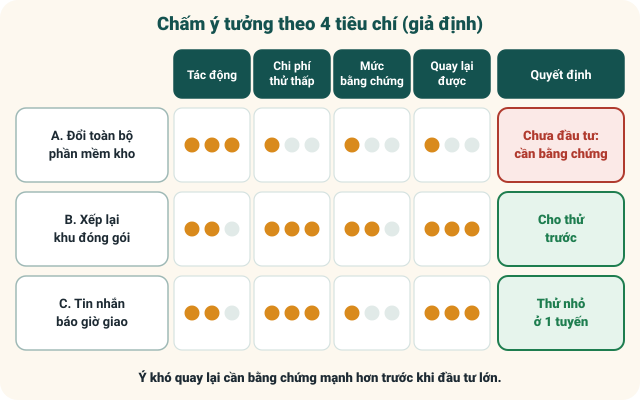

K4 · Sáng tạo và cải tiến › Bậc 5 Dẫn dắt
Tạo chỗ cho đội dám thử và chọn ý tưởng để đầu tư bằng bằng chứng
Bài Bậc 5 (Dẫn dắt). Cách mở kênh để đội dám báo tin xấu có ở bài Nghe tín hiệu yếu (N6). Cách dẫn thay đổi có ở bài Dẫn dắt thay đổi và đưa AI vào đội (N5).
1. Mục tiêu
- Đặt quỹ thử nghiệm cố định: bao nhiêu giờ, bao nhiêu tiền, ai duyệt, bao lâu.
- Chấm và chọn ý tưởng theo 4 tiêu chí.
- Dẫn buổi rút kinh nghiệm không đổ lỗi.
2. Khởi động truy xuất
- Ba bước mượn ý tưởng từ lĩnh vực khác là gì?
- Vòng cải tiến 5 bước kết thúc bằng bước nào, và vì sao bước đó hay bị quên?
Đáp án
- Viết bài toán ở dạng chung; tìm 3 lĩnh vực có bài toán giống; rút nguyên lý, không chép cách làm.
- Chuẩn hóa. Khi thử xong, mọi người nghĩ là đã xong việc.
Xem lại: Mượn ý tưởng từ lĩnh vực khác.
3. Giải thích
Quản lý hay nói "cứ đề xuất, anh ủng hộ". Nhưng đội vẫn không thử gì. Lý do thường là không có thời gian, không có tiền, và sợ bị trách nếu hỏng. Văn hóa thử nghiệm được tạo bằng cơ chế cụ thể, không bằng lời khuyến khích.
Cơ chế 1. Quỹ thử nghiệm cố định. Ghi rõ 4 điều:
Quỹ thử nghiệm của đội
- Thời gianVí dụ: mỗi người tối đa 4 giờ mỗi tháng cho thử nghiệm.
- TiềnMột hạn mức nhỏ cho mỗi lần thử, không cần qua quy trình mua sắm dài.
- Người duyệtMột người, duyệt trong 2 ngày làm việc.
- Thời hạn thửThường 2–6 tuần, có ngày xem lại kết quả.
Con số tùy đơn vị. Điều quan trọng là có con số, và giữ nó cả khi bận.
Cơ chế 2. Chọn ý tưởng bằng 4 tiêu chí. Chấm mỗi tiêu chí 1–3 điểm:
| Tiêu chí | Câu hỏi |
|---|---|
| Tác động | Nếu thành công, chỉ số nào cải thiện, nhiều cỡ nào? |
| Chi phí thử | Thử nhỏ tốn bao nhiêu giờ, bao nhiêu tiền? |
| Mức bằng chứng | Mới là ý kiến, có số liệu hiện trạng, hay đã thử nhỏ có đo? |
| Quay lại được | Nếu hỏng, có trở về cách cũ dễ dàng không? |
Ý tưởng khó quay lại thì cần bằng chứng mạnh hơn trước khi đầu tư lớn. Ý tưởng dễ quay lại thì cứ cho thử nhỏ.
Cơ chế 3. Rút kinh nghiệm không đổ lỗi. Sau mỗi lần thử, kể cả không thành, hỏi 4 câu:
Ta định làm gì? Thực tế ra sao? Vì sao khác? Lần sau đổi gì?
Câu "vì sao" nói về quy trình và giả định, không về con người. Quản lý nói trước về sai sót của chính mình thì đội dễ nói thật hơn.
Phản ứng của bạn quyết định văn hóa. Một lần trách người thử hỏng có thể khiến cả đội im lặng nhiều tháng.
4. Ví dụ tại nơi làm việc Việt Nam
Tình huống giả định. Anh Tâm là trưởng phòng bán hàng của một chuỗi cửa hàng điện máy ở miền Tây. Cả năm chỉ có 1 đề xuất cải tiến từ nhân viên.
Anh Tâm làm như sau:
- Quỹ thử nghiệm: mỗi cửa hàng được 8 giờ công mỗi tháng và một hạn mức nhỏ cho thử. Anh Tâm duyệt trong 2 ngày.
- Chọn ý tưởng: quý đầu có 7 đề xuất. Anh chấm theo 4 tiêu chí cùng 2 cửa hàng trưởng. Chọn 3 ý điểm cao, dễ quay lại.
- Rút kinh nghiệm: ý "nhắn Zalo hỏi thăm khách sau 7 ngày" không tăng mua lại. Buổi rút kinh nghiệm thấy lý do: tin nhắn gửi giờ khách đang làm. Lần sau đổi giờ gửi.
Anh Tâm mở đầu buổi bằng việc nhận mình đã duyệt giờ gửi tin mà không hỏi khách.
Vì sao cách này tốt: đội có giờ, có tiền, có người duyệt nhanh. Ý tưởng được chọn công khai theo tiêu chí. Thử không thành vẫn cho bài học, không ai bị trách.
5. Thực hành
Tình huống giả định. Bạn là giám đốc vận hành một công ty logistics vừa. Bạn nhận 3 đề xuất:
A. Đổi toàn bộ phần mềm quản lý kho (chưa thử, chi phí lớn, khó quay lại). B. Sắp xếp lại khu đóng gói ở một kho (đã đo hiện trạng, chi phí nhỏ, dễ quay lại). C. Gửi tin nhắn báo giờ giao dự kiến cho khách (có ý kiến khách, chi phí nhỏ, dễ quay lại).
Chấm 4 tiêu chí và quyết định cho ý nào thử trước. Với ý A, bạn cần gì trước khi quyết định?
Gợi ý 1
Ý nào khó quay lại? Ý đó cần mức bằng chứng nào trước khi đầu tư lớn?
Lời giải mẫu
- B: tác động 2, chi phí thấp 3, bằng chứng 2, quay lại 3. Cho thử trước.
- C: tác động 2, chi phí thấp 3, bằng chứng 1, quay lại 3. Cho thử nhỏ ở một tuyến.
- A: tác động có thể 3, chi phí thấp 1, bằng chứng 1, quay lại 1. Chưa đầu tư. Trước hết cần số liệu hiện trạng, và thử nhỏ một phân hệ hoặc một kho.
(Điểm số là giả định để minh họa.)

6. Tự kiểm tra
Chọn đáp án. Mỗi lựa chọn đều có giải thích.
Câu 1. Quản lý nói "cứ đề xuất, anh ủng hộ" nhưng đội không thử gì. Lý do có khả năng nhất là gì?
-
Chưa đúng. Thường đội có ý tưởng, nhưng thiếu thời gian, tiền và sợ bị trách.
-
Đúng. Đúng. Lời khuyến khích chưa đủ. Cần cơ chế rõ để người ta dám bắt đầu.
-
Chưa đúng. Kết luận về con người mà không xem cơ chế dễ dẫn đến giải pháp sai.
Câu 2. Ý tưởng tốn kém và khó quay lại. Bạn nên làm gì?
-
Chưa đúng. Khó quay lại thì rủi ro cao. Cần bằng chứng mạnh hơn trước.
-
Đúng. Đúng. Ý tưởng khó quay lại cần mức bằng chứng cao hơn.
-
Chưa đúng. Từ chối ngay có thể bỏ lỡ cơ hội. Hãy tìm cách thử nhỏ để có bằng chứng.
Câu 3. Trong buổi rút kinh nghiệm, câu hỏi nào phù hợp?
-
Chưa đúng. Câu hỏi đổ lỗi làm mọi người im lặng, không học được gì.
-
Đúng. Đúng. Tập trung vào quy trình và giả định giúp cả đội học.
-
Chưa đúng. Câu này nghe như trách móc. Hãy hỏi về những gì đã xảy ra.
Câu 4. Vì sao quản lý nên nói trước về sai sót của chính mình trong buổi rút kinh nghiệm?
-
Đúng. Đúng. Quản lý làm mẫu thì đội dễ nói thật hơn.
-
Chưa đúng. Mục đích không phải gánh thay, mà là mở đầu cho trao đổi trung thực.
-
Chưa đúng. Không có quy định chung nào như vậy. Đây là cách làm để xây lòng tin.
Câu 5. Quỹ thử nghiệm đã đặt 4 giờ mỗi người mỗi tháng. Tháng này đội bận. Bạn làm gì?
-
Chưa đúng. Bỏ khi bận cho đội thấy thử nghiệm không thật sự được coi trọng.
-
Đúng. Đúng. Giữ con số cả khi bận thì cơ chế mới có giá trị.
-
Chưa đúng. Hứa bù dễ không làm được. Giữ đều đặn tốt hơn.
7. Phản tư
- Trong năm qua, đội bạn đã thử bao nhiêu cách làm mới? Điều gì cản trở nhiều nhất?
- Lần gần nhất một thử nghiệm không thành, bạn đã phản ứng thế nào trong 5 phút đầu?
8. Áp dụng thật
Trong 7 ngày tới, viết quỹ thử nghiệm của đội với đủ 4 điều: thời gian, tiền, người duyệt, thời hạn. Báo cho đội. Chọn một thử nghiệm đã xong gần đây và dẫn buổi rút kinh nghiệm 4 câu.
Mức bằng chứng. Edmondson (1999), Administrative Science Quarterly 44(2): nhóm có an toàn tâm lý cao thì có nhiều hành vi học hỏi hơn. Camuffo và cộng sự (2020), Management Science 66(2): startup được dạy cách thử nghiệm có kiểm chứng đạt kết quả tốt hơn. Ba cơ chế và thang chấm điểm là đề xuất của site.
9. Siêu dữ liệu
| skill | K4 · Sáng tạo và cải tiến |
|---|---|
| level | Bậc 5 · Dẫn dắt |
| group | N5, N6 |
| framework_map | WEF: Creative thinking; Leadership and social influence; CSfW: 3d Create and innovate; SkillsFuture CCS: Creative Thinking; Developing People; EntreComp: Valuing ideas; Coping with uncertainty, ambiguity and risk (chỉ dẫn chiếu) |
| updated | 2026-11-14 |
Hoàn thành bài
Đánh dấu đã học để site gợi ý lịch ôn sau 1, 3 và 7 ngày. Dữ liệu chỉ lưu trên máy của bạn.
Lịch ôn gợi ý: